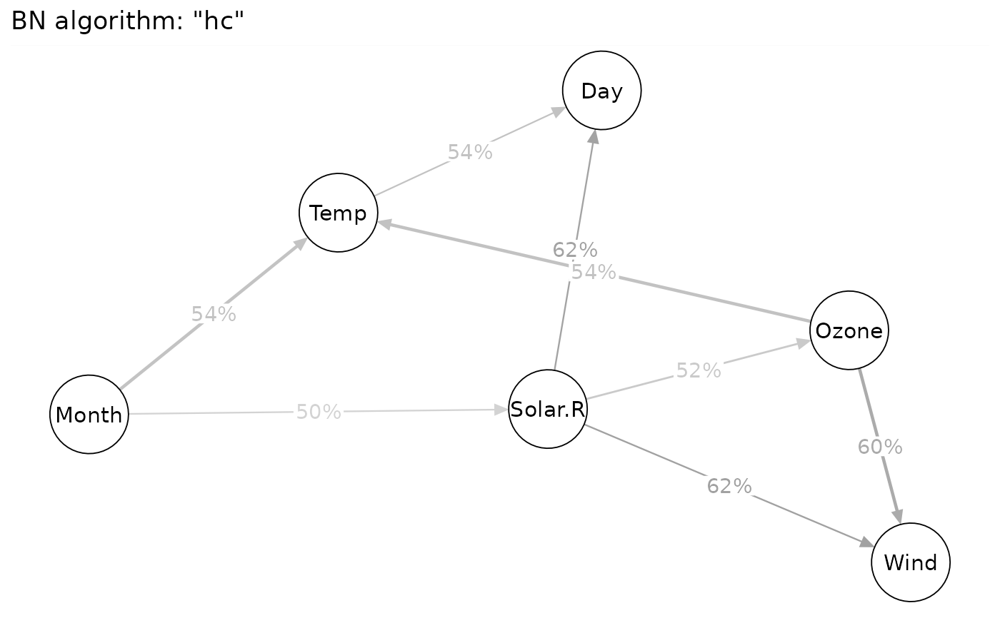

Directed acyclic graphs (DAGs) via Bayesian networks (BNs). It uses bnlearn::boot.strength() to estimate the strength of each edge as its empirical frequency over a set of networks learned from bootstrap samples. It computes (1) the probability of each edge (modulo its direction) and (2) the probabilities of each edge's directions conditional on the edge being present in the graph (in either direction). Stability thresholds are usually set as 0.85 for strength (i.e., an edge appearing in more than 85% of BNs bootstrap samples) and 0.50 for direction (i.e., a direction appearing in more than 50% of BNs bootstrap samples) (Briganti et al., 2023). Finally, for each chosen algorithm, it returns the stable Bayesian network as the final DAG.
Arguments
- data
Data.
- algorithm
Structure learning algorithms for building Bayesian networks (BNs). Should be function name(s) from the
bnlearnpackage. Better to perform BNs with all three classes of algorithms to check the robustness of results (Briganti et al., 2023).Defaults to the most common algorithms:
"pc.stable"(PC),"hc"(HC), and"rsmax2"(RS), for the three classes, respectively.(3) Hybrid Algorithms (combination of constraint-based and score-based algorithms)
- algorithm.args
An optional list of extra arguments passed to the algorithm.
- n.boot
Number of bootstrap samples (for learning a more "stable" network structure). Defaults to
1000.- seed
Random seed for replicable results. Defaults to
NULL.- strength
Stability threshold of edge strength: the minimum proportion (probability) of BNs (among the
n.bootbootstrap samples) in which each edge appears.Defaults to
0.85(85%).Two reverse directions share the same edge strength.
Empirical frequency (?~100%) will be mapped onto edge width/thickness in the final integrated
DAG, with wider (thicker) edges showing stronger links, though they usually look similar since the default range has been limited to 0.85~1.
- direction
Stability threshold of edge direction: the minimum proportion (probability) of BNs (among the
n.bootbootstrap samples) in which a direction of each edge appears.Defaults to
0.50(50%).The proportions of two reverse directions add up to 100%.
Empirical frequency (?~100%) will be mapped onto edge greyscale/transparency in the final integrated
DAG, with its value shown as edge text label.
- node.text.size
Scalar on the font size of node (variable) labels. Defaults to
1.2.- edge.width.max
Maximum value of edge strength to scale all edge widths. Defaults to
NULL(for undirected correlation networks) and1.5(for directed acyclic networks to better display arrows).- edge.label.mrg
Margin of the background box around the edge label. Defaults to
0.01.- file
File name of saved plot (
".png"or".pdf").- width, height
Width and height (in inches) of saved plot. Defaults to
6and4.- dpi
Dots per inch (figure resolution). Defaults to
500.- verbose
Print information about BN algorithm and number of bootstrap samples when running the analysis. Defaults to
TRUE.- ...
Arguments passed on to
qgraph().
Value
Return a list (class bns.dag) of Bayesian network results and qgraph object.
References
Briganti, G., Scutari, M., & McNally, R. J. (2023). A tutorial on Bayesian networks for psychopathology researchers. Psychological Methods, 28(4), 947–961. doi:10.1037/met0000479
Burger, J., Isvoranu, A.-M., Lunansky, G., Haslbeck, J. M. B., Epskamp, S., Hoekstra, R. H. A., Fried, E. I., Borsboom, D., & Blanken, T. F. (2023). Reporting standards for psychological network analyses in cross-sectional data. Psychological Methods, 28(4), 806–824. doi:10.1037/met0000471
Scutari, M., & Denis, J.-B. (2021). Bayesian networks: With examples in R (2nd ed.). Chapman and Hall/CRC. doi:10.1201/9780429347436
Examples
bn = BNs_dag(airquality, seed=1)
#> Warning: Missing values (NA) found in data!
#>
#> BNs results would be affected by missing values!
#>
#> You may use `na.omit()` to delete missing values listwise.
#> Running BN algorithm "pc.stable" with 1000 bootstrap samples...
#> Running BN algorithm "hc" with 1000 bootstrap samples...
#> Running BN algorithm "rsmax2" with 1000 bootstrap samples...
bn
#> Displaying DAG with BN algorithm "pc.stable"
#> Displaying DAG with BN algorithm "hc"

#> Displaying DAG with BN algorithm "rsmax2"
# bn$pc.stable
# bn$hc
# bn$rsmax2
## All DAG objects can be directly plotted
## or saved with print(..., file="xxx.png")
# bn$pc.stable$DAG.edge
# bn$pc.stable$DAG.strength
# bn$pc.stable$DAG.direction
# bn$pc.stable$DAG
# ...
if (FALSE) { # \dontrun{
print(bn, file="airquality.png")
# will save three plots with auto-modified file names:
- "airquality_BNs.DAG.01_pc.stable.png"
- "airquality_BNs.DAG.02_hc.png"
- "airquality_BNs.DAG.03_rsmax2.png"
# arrange multiple plots using aplot::plot_list()
# install.packages("aplot")
c1 = cor_net(airquality, "cor")
c2 = cor_net(airquality, "pcor")
bn = BNs_dag(airquality, seed=1)
mytheme = theme(plot.title=element_text(hjust=0.5))
p = aplot::plot_list(
plot(c1),
plot(c2),
plot(bn$pc.stable$DAG) + mytheme,
plot(bn$hc$DAG) + mytheme,
plot(bn$rsmax2$DAG) + mytheme,
design="111222
334455",
tag_levels="A"
) # return a patchwork object
ggsave(p, filename="p.png", width=12, height=8, dpi=500)
ggsave(p, filename="p.pdf", width=12, height=8)
} # }